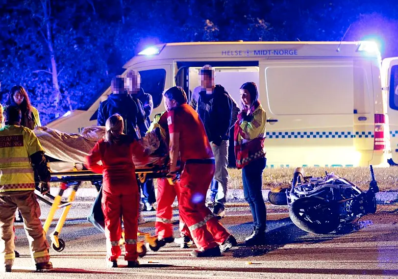
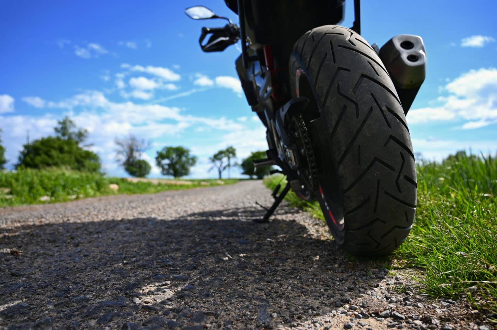

Bør aldersgrensen på lettsykkel økes?
I 2023 mistet 3 ungdommer livet, og 40 ble hard skadd i ulykker på lettsykkel. Det er en økning på 20% fra 2022.
Lett motorsykkel er populært blant ungdom, men dessverre ser vi en økning i antallet som omkommer eller blir hardt skadd på disse kjøretøyene. Det er viktig at foreldre er klar over de farene som lett motorsykkel kan innebære.
Urovekkende økning i antall ulykker
De siste 23 årene har det vært en økning på 58 prosent drepte og hardt skadde 16- og 17-åringer på lett MC.
Det er mange som blir hardt skadd, og disse skadene kan ha livslange konsekvenser for de unge menneskene som rammes.